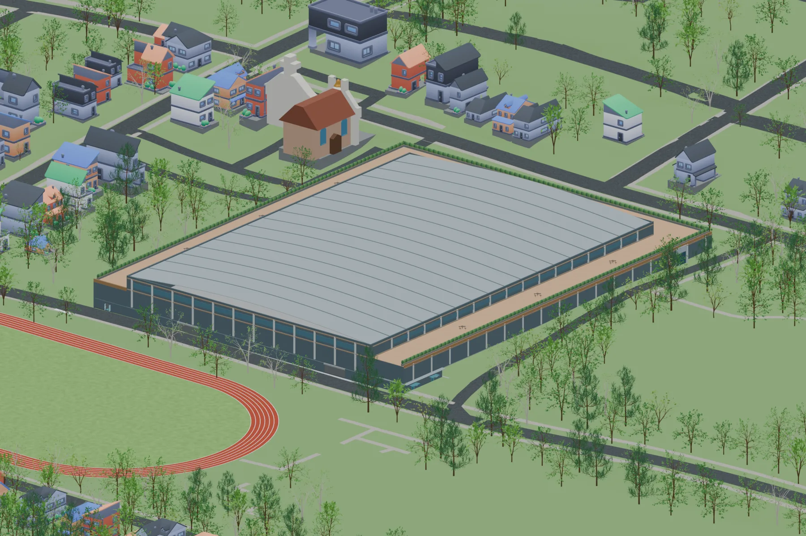
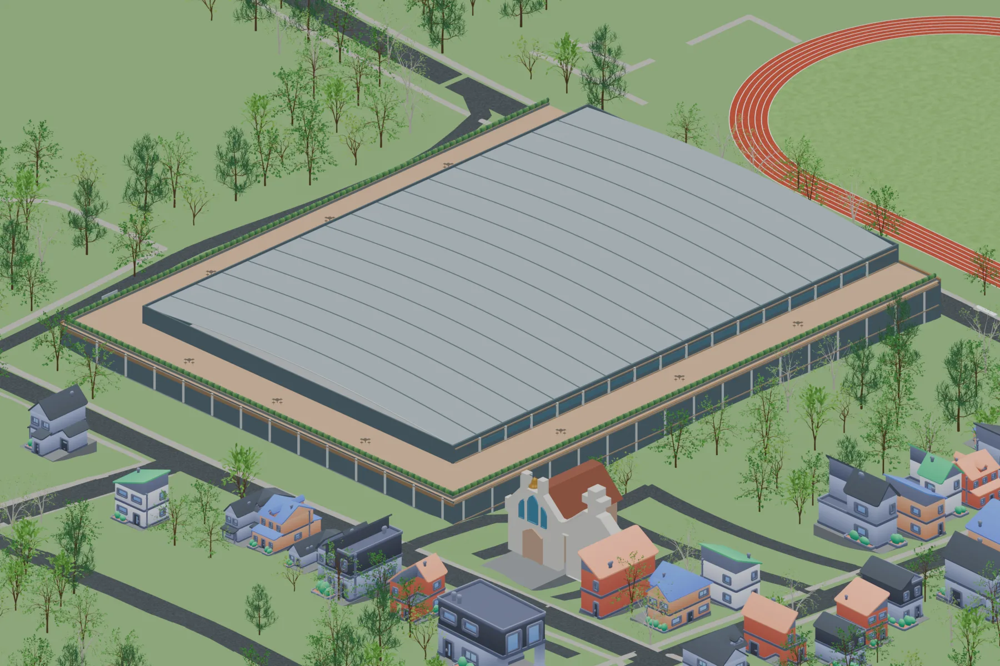
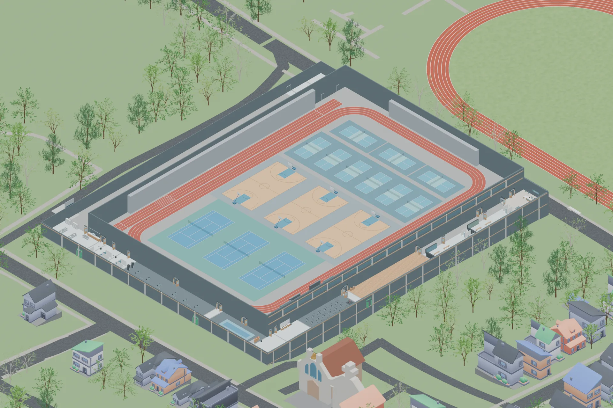
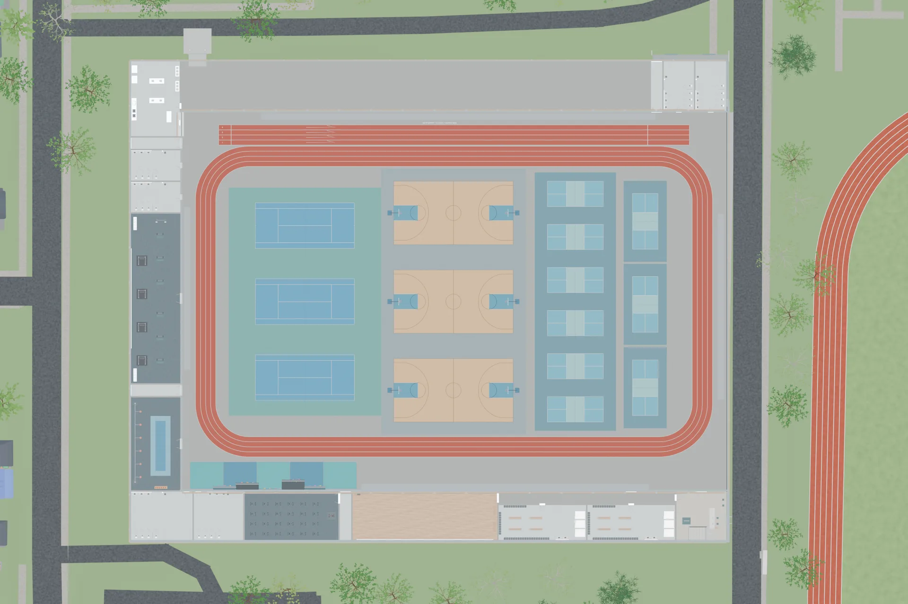
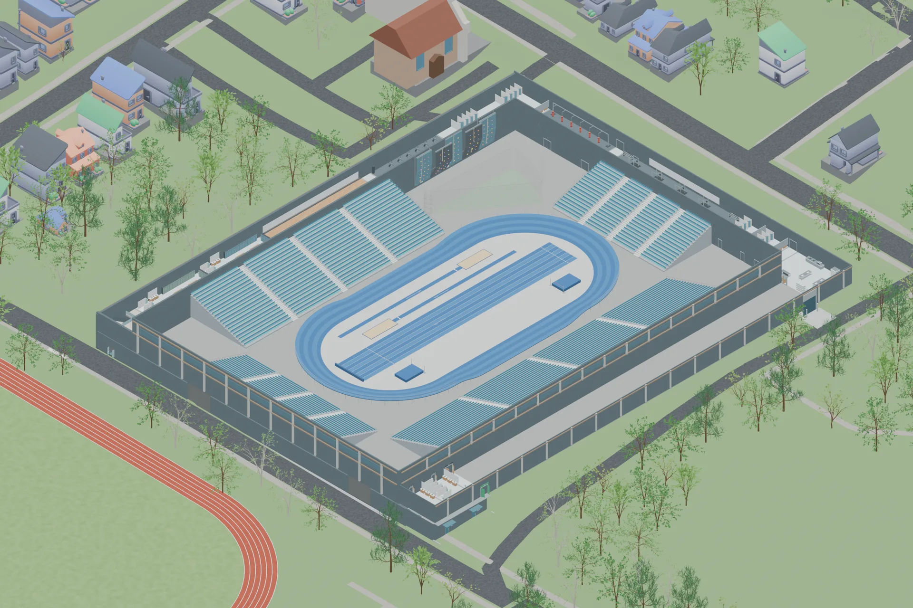
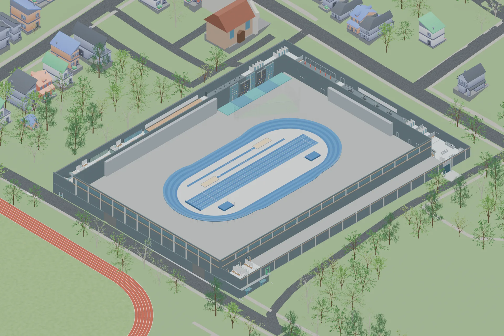
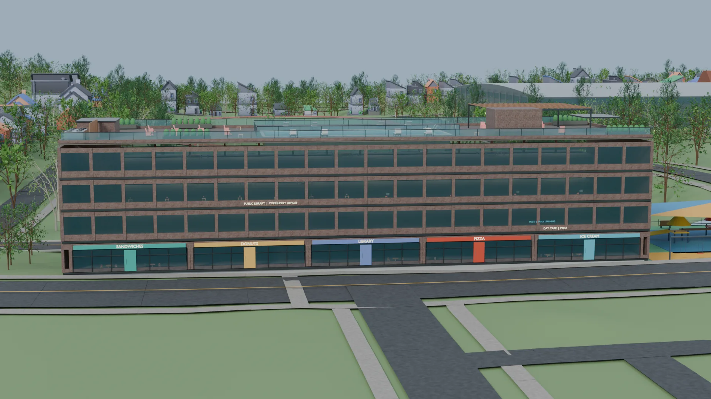
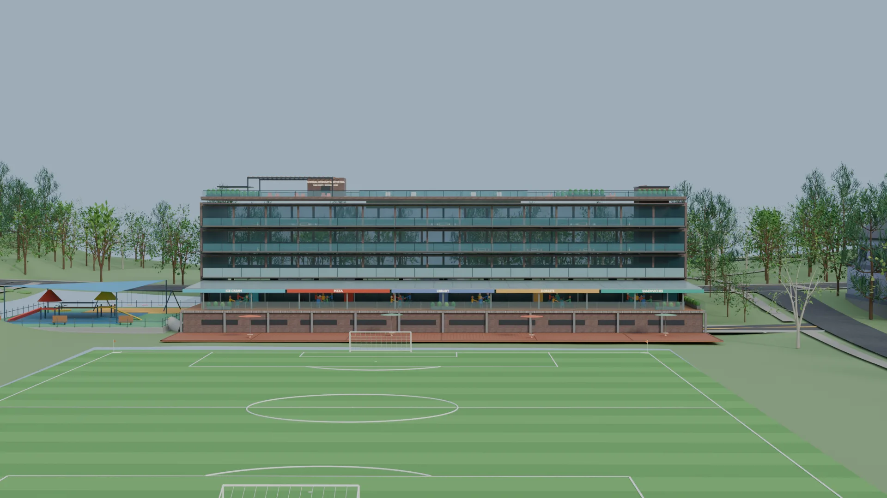
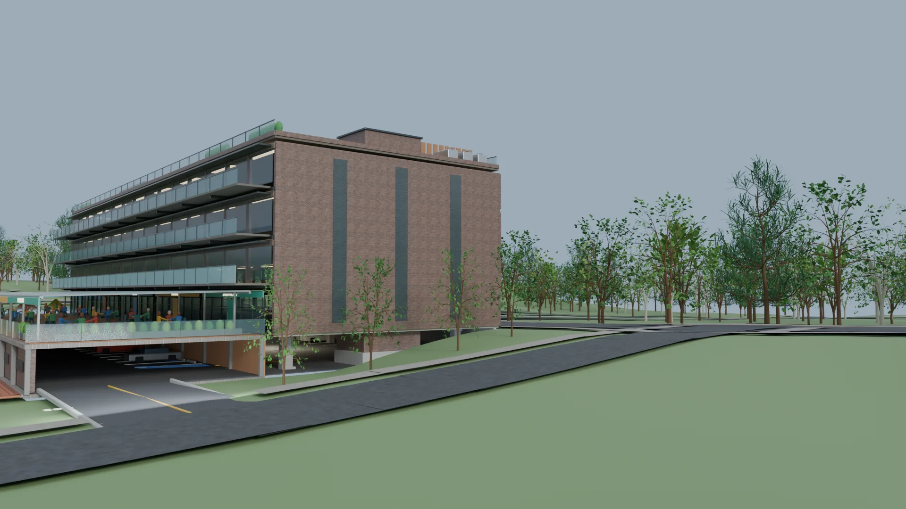

An athletic field house
This compromise would create an athletic field house for community recreation that converts to track competitions during the December–February indoor track season. Martin Street is 10 feet higher than Ami Street, allowing parking underneath the building. Membership would be part of the existing city recreation membership: $245 for families, $110 for adults, and free for seniors.




March–November
Recreation season
During the recreation season, the field house would provide space for basketball, tennis, pickleball, table tennis, rock climbing, martial arts, weight lifting, a dance studio, track, and bike riding.




December–February
Competition season
During indoor track season, the field house would convert into a world-class track arena. We would lose access to some recreation facilities during these months, but other spaces would remain available when a scheduled event is not taking place.




A separate community center
A separate community center would provide office space for Atlanta Track Club, retail on the first floor, and the remaining space for community uses. The exact mix would depend on the funding secured. Possibilities include pre-K, daycare, a library, arts and music spaces, and senior programs.






How this could work
Splitting the project into two buildings would make them simpler and less costly to build. Expensive site work could be avoided, and a broader donor base would make fundraising easier. Convention centers in Albuquerque and Reno already use portable indoor tracks, allowing the same space to serve other purposes outside track season.